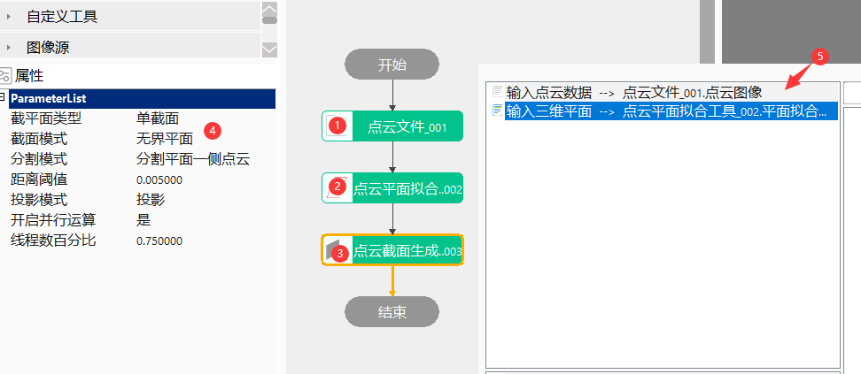
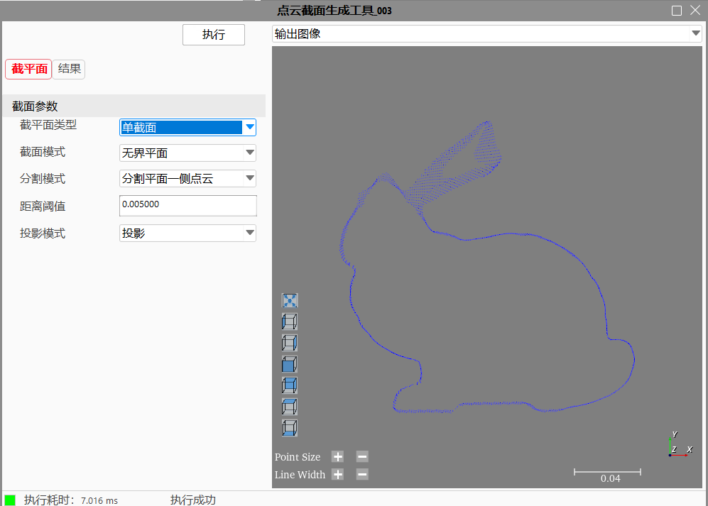
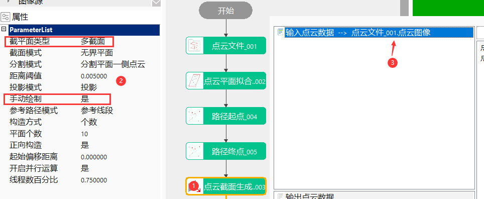
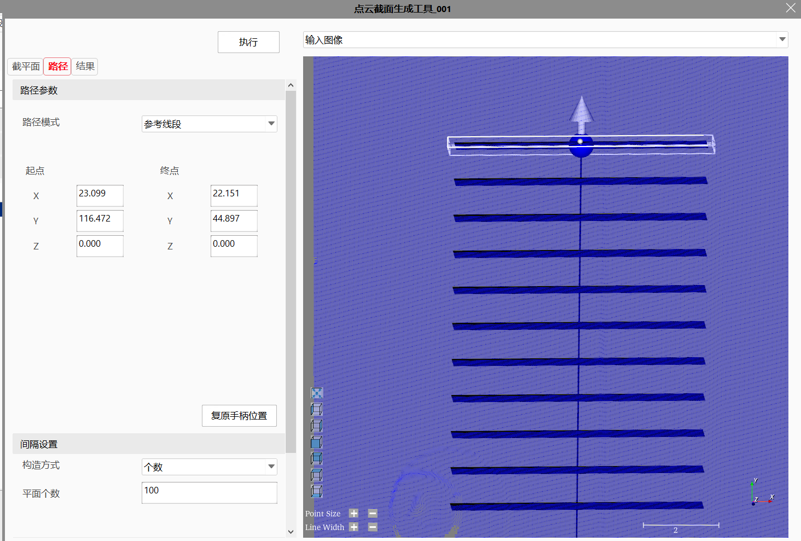
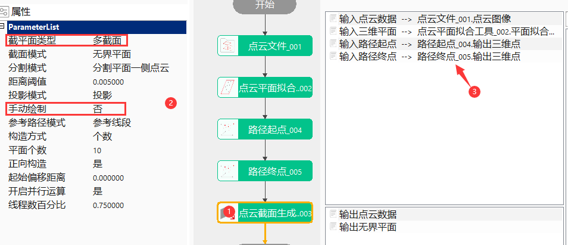

Công cụ tạo mặt cắt đám mây điểm được chia thành hai chế độ: mặt cắt đơn và nhiều mặt cắt. Mặt cắt đơn sẽ cắt lấy đường viền theo một mặt phẳng đầu vào. Nhiều mặt cắt sẽ tạo một loạt mặt phẳng theo một đường dẫn cố định và lấy đường viền của từng mặt phẳng.
Công cụ được dùng để lấy dữ liệu đám mây điểm nằm trên một mặt phẳng xác định (dữ liệu mặt cắt) từ đám mây điểm 3D. Thông qua việc kiểm tra dữ liệu mặt cắt này, có thể đánh giá đám mây điểm gốc có khuyết tật hay không, đồng thời giảm độ khó đo đạc trực tiếp trên đám mây điểm 3D và nâng cao độ chính xác đo lường.
Bước 1：Thêm công cụ Tải file đám mây điểm → công cụ Fit Plane (hoặc bất kỳ công cụ nào có thể tạo ra mặt phẳng) → công cụ Tạo Mặt Cắt Đám Mây Điểm. Nhấp đúp vào công cụ để mở chuỗi tham số, nối file đám mây điểm và mặt phẳng đầu vào như Hình 3-1;
Bước 2：Chuột phải vào công cụ Tạo Mặt Cắt Đám Mây Điểm → chọn “Thuộc tính” để mở giao diện nâng cao (hoặc thao tác trực tiếp trên trang thuộc tính). Tại đây thiết lập ngưỡng khoảng cách (distance threshold) – chỉ những điểm nằm trong khoảng cách này với mặt phẳng mới được giữ lại tạo thành mặt cắt. Sau khi thiết lập xong, nhấn Chạy để nhận dữ liệu mặt cắt, như Hình 3-2.


Chế độ nhiều mặt cắt có hai kiểu: vẽ tay (thủ công) và không vẽ tay (tự động). Kiểu vẽ tay cho phép vẽ trực tiếp đường dẫn và chỉnh thông số mặt phẳng ngay trên giao diện nâng cao. Kiểu không vẽ tay cần nối sẵn các tham số đường dẫn và mặt phẳng gốc trong chuỗi dữ liệu.
Bước 1：Thêm file đám mây điểm và công cụ Tạo Mặt Cắt Đám Mây Điểm, nhấp đúp mở chuỗi tham số, chỉ cần nối file đám mây điểm như Hình 3-3;
Bước 2：Chuột phải vào công cụ → “Thuộc tính” để mở giao diện nâng cao (Hình 3-4). Trong cửa sổ xem kéo thả ROI đến vị trí phù hợp hoặc chỉnh trực tiếp các tham số mặt phẳng/đường dẫn, sau đó nhấn Chạy để nhận toàn bộ dữ liệu các mặt cắt dọc theo đường dẫn.


Bước 1：Thêm file đám mây điểm và công cụ Tạo Mặt Cắt Đám Mây Điểm, mở chuỗi tham số, nối file đám mây điểm như Hình 3-5;
Bước 2：Trong chuỗi dữ liệu nối thêm mặt phẳng gốc và tất cả các tham số cần thiết của đường dẫn, sau đó nhấn Chạy để nhận toàn bộ dữ liệu các mặt cắt dọc theo đường dẫn.

| Tên tham số | Mô tả tham số |
|---|---|
| Đám mây điểm đầu vào | Ảnh đám mây điểm đầu vào |
| Mặt phẳng 3D đầu vào | Mặt phẳng dùng để cắt, chỉ có hiệu lực khi thuộc tính “Chế độ mặt cắt” chọn “Mặt phẳng 3D vô giới hạn” |
| Mặt phẳng hình chữ nhật 3D đầu vào | Mặt phẳng hình chữ nhật dùng để cắt, chỉ có hiệu lực khi chọn “Mặt phẳng hình chữ nhật 3D” |
| Mặt phẳng hình tròn 3D đầu vào | Mặt phẳng hình tròn dùng để cắt, chỉ có hiệu lực khi chọn “Mặt phẳng hình tròn 3D” |
| Điểm bắt đầu đường dẫn | Chế độ nhiều mặt cắt – điểm bắt đầu của đường dẫn |
| Điểm kết thúc đường dẫn | Chế độ nhiều mặt cắt – điểm kết thúc của đường dẫn |
| Đường dẫn tham chiếu hình tròn 3D | Chế độ nhiều mặt cắt – đường dẫn dạng đường tròn hoặc cung tròn |
| Độ lệch tùy chỉnh | Độ lệch khoảng cách/góc tùy chỉnh trong chế độ nhiều mặt cắt |
| Tên tham số | Mô tả tham số |
|---|---|
| Loại mặt cắt | Chia thành hai loại: Mặt cắt đơn và Nhiều mặt cắt |
| Chế độ mặt cắt | Ba lựa chọn: Mặt phẳng vô giới hạn, Mặt phẳng hình chữ nhật 3D, Mặt phẳng hình tròn 3D |
| Chế độ phân tách | Hai lựa chọn: Chỉ giữ lại điểm ở một phía pháp vector của mặt phẳng hoặc Giữ lại điểm ở cả hai phía |
| Ngưỡng khoảng cách | Khoảng cách tối đa từ điểm tới mặt phẳng để được giữ lại làm dữ liệu mặt cắt, phạm vi [0, 10000] |
| Chế độ chiếu | Có chiếu các điểm đã lọc lên mặt phẳng hay không: Không chiếu / Có chiếu |
| Vẽ tay (thủ công) | Có: vẽ và chỉnh đường dẫn + mặt phẳng trực tiếp trong giao diện nâng cao; Không: dùng tham số từ chuỗi dữ liệu |
| Loại đường dẫn tham chiếu | Ba lựa chọn: Đoạn thẳng tham chiếu, Hình tròn tham chiếu, Cung tròn tham chiếu |
| Kiểu xây dựng cung tròn | Hai kiểu: Hình tròn + điểm đầu + điểm cuối hoặc Hình tròn + điểm đầu + góc quét cung |
| Góc quét cung | Phạm vi (0, 360) độ |
| Xây dựng theo chiều kim đồng hồ | Có: theo chiều kim đồng hồ; Không: ngược chiều kim đồng hồ |
| Phương thức tạo nhiều mặt phẳng | Ba lựa chọn: Theo số lượng, Theo khoảng cách/góc, Tùy chỉnh (khi chọn tùy chỉnh sẽ dùng tham số “Độ lệch tùy chỉnh” từ chuỗi) |
| Số lượng mặt phẳng | Số mặt phẳng cần tạo, phạm vi [2, 100] |
| Khoảng cách/góc giữa các mặt phẳng | Khoảng cách: (0, 10000], góc: (0, 360) |
| Hướng tạo thuận | Có: từ điểm đầu → điểm cuối; Không: từ điểm cuối → điểm đầu |
| Độ lệch ban đầu (khoảng cách/góc) | Độ lệch từ điểm/góc bắt đầu trước khi tạo các mặt phẳng đầu tiên, khoảng cách [0,10000], góc [0,360) |
| Bật tính toán song song | Có: bật OpenMP để tăng tốc độ tính toán (có thể thời gian không ổn định); Không: tắt OpenMP |
| Tỷ lệ phần trăm số luồng | Tỷ lệ sử dụng CPU cho tính toán song song, phạm vi hiệu quả (0, 0.75] tức 0% ~ 75% |
Các tham số trong giao diện nâng cao hoàn toàn giống với cửa sổ thuộc tính, chỉ có thêm các nút tương tác sau:
| Tên nút | Mô tả chức năng |
|---|---|
| Khôi phục vị trí tay cầm (ROI) | Đặt lại vị trí ROI về tư thế mặc định phù hợp với đặc điểm của đám mây điểm đầu vào |
| Tên tham số | Mô tả tham số |
|---|---|
| Đám mây điểm đầu ra | Dữ liệu đám mây điểm nằm trên các mặt cắt |
| Dữ liệu mặt cắt đầu ra | Chế độ mặt cắt đơn: xuất dữ liệu đường viền (contour) |
| Mảng dữ liệu mặt cắt đầu ra | Chế độ nhiều mặt cắt: xuất mảng các đường viền của từng mặt cắt |
| Mặt phẳng vô giới hạn đầu ra | Chế độ nhiều mặt cắt: xuất các mặt phẳng vô giới hạn dọc theo đường dẫn |
| Mặt phẳng hình chữ nhật 3D đầu ra | Chế độ nhiều mặt cắt: xuất các mặt phẳng hình chữ nhật dọc theo đường dẫn |
| Mặt phẳng hình tròn 3D đầu ra | Chế độ nhiều mặt cắt: xuất các mặt phẳng hình tròn dọc theo đường dẫn |
| Tên tham số | Mô tả tham số |
|---|---|
| Đám mây điểm đầu ra | Dữ liệu đám mây điểm nằm trên các mặt cắt |
| Mặt phẳng vô giới hạn đầu ra | Chế độ nhiều mặt cắt: các mặt phẳng vô giới hạn dọc theo đường dẫn |
| Mặt phẳng hình chữ nhật 3D đầu ra | Chế độ nhiều mặt cắt: các mặt phẳng hình chữ nhật dọc đường dẫn |
| Mặt phẳng hình tròn 3D đầu ra | Chế độ nhiều mặt cắt: các mặt phẳng hình tròn dọc đường dẫn |
| Thời gian thực thi | Thời gian chạy công cụ |
| Kết quả thực thi | Kết quả thực thi của công cụ |
参见“\Samples\3D\点云\点云截面生成工具.gvp”。